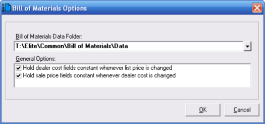

Bill of Materials Options Dialog (Bill of Materials - General Menu) |
  
|
Bill of Materials Options Dialog (Bill of Materials - General Menu) |
|
To open this dialog, click the menu "Bill of Materials - General | Options." The dialog pictured below will open.

Bill of Materials Data Folder: This input lets you change the location of the folder that holds the Bill of Materials database file as well as other data files. If you are going to be using Bill of Materials from multiple computers in the same office, you may want to use this input to set the data folder to a folder on a server that each workstation will be able to access. If you do that, you will need to set the location of the data folder on this dialog for each computer.
Whenever you change this folder to a new location, the program will look for the database file and the other files in the new location. If they are already present in that folder, the program will simply use the existing files in the new folder. If the files are not present in the new folder, they will be copied to it.
To change the data folder, click the dropdown help button to the right of this input and click the item at the bottom of the dropdown help window.
General Options
Hold sale price fields constant whenever dealer cost is changed: When checked, makes it so whenever you change the dealer cost for an item the sale price of that item remains constant, and the margin and markup will be instead be updated.
Hold dealer cost fields constant whenever list price is changed: When checked, makes it so when you change the list price for an item the dealer cost for that item remains the same, and the dealer discount will instead be updated.